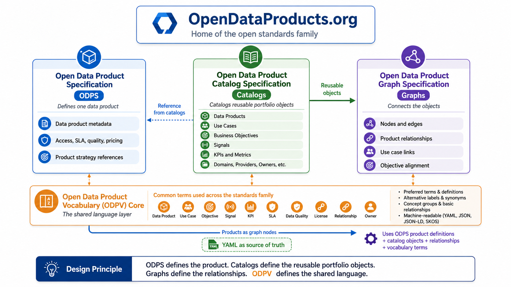

OPEN DATA PRODUCT VOCABULARY - The Linux Foundation
Version DRAFT
The key words “MUST”, “MUST NOT”, “REQUIRED”, “SHALL”, “SHALL NOT”, “SHOULD”, “SHOULD NOT”, “RECOMMENDED”, “NOT RECOMMENDED”, “MAY”, and “OPTIONAL” in this document are to be interpreted as described in BCP 14 (RFC 2119 and RFC 8174) when, and only when, they appear in all capitals, as shown here.
The vocabulary is shared under Apache 2.0 license. Development of the vocabulary is under the umbrella of the Linux Foundation.
| Topic | Link | Description |
|---|---|---|
| Version source | Open Data Products Vocab on GitHub | Official source repository for the ODPV vocabulary |
| Knowledge Base | Open Data Product Spec Family Knowledge Base | Practical examples, FAQs, and implementation guidance |
| Contribute | Raise an issue in GitHub | Submit issues or suggestions to the vocabulary maintainers |
Introduction
The Open Data Product Vocabulary, ODPV, is a vendor-neutral, open-source, machine-readable controlled vocabulary for data product management. ODPV defines shared terms used across the OpenDataProducts.org standards family, including data products, catalogs, graphs, value concepts, governance concepts, and relationship terms. It is designed to help organizations use consistent language across specifications, catalogs, graph implementations, AI assistants, and GraphRAG-ready data product portfolios.

What ODPV Defines
ODPV defines the shared vocabulary layer for the OpenDataProducts.org standards family. The first version focuses on four concept groups:
ODPV Core: ODPV Core defines foundational terms used across the standards family.These terms describe the basic objects and roles needed to manage data products, catalogs, and graphs.
ODPV Value: ODPV Value defines terms that connect data products to business demand, objectives, outcomes, and prioritization. These terms help connect data products to measurable value and portfolio-level decision-making.
ODPV Governance: ODPV Governance defines terms for quality, access, legal, operational, and compliance context.These terms help describe how data products are governed, accessed, controlled, and trusted.
ODPV Relationships: ODPV Relationships defines reusable relationship terms for graph implementation and portfolio analysis. These relationship terms help connect data products, use cases, objectives, KPIs, signals, providers, consumers, policies, and catalogs in a consistent way.
These groups create a common language for describing, connecting, validating, and reasoning over data product portfolios.
| Section | Purpose | Term count |
|---|---|---|
| ODPV Core | Foundational objects, roles, classifications, and references | 13 |
| ODPV Value | Business value, demand, outcomes, gaps, and priorities | 15 |
| ODPV Governance | Quality, access, licensing, agreements, policy, and compliance | 15 |
| ODPV Relationships | Relationship terms for graphs and portfolio analysis | 16 |
| Total | Shared vocabulary terms | 59 |
Suggest addition to the vocabulary
Companion Vocabulary, Not a Heavy Ontology
ODPV is not intended to be a heavy ontology. It is a practical controlled vocabulary that gives stable reference terms to the OpenDataProducts.org standards family. Each specification can reference ODPV terms instead of redefining shared concepts locally. Shared terms belong in ODPV. Spec-specific terms stay in the relevant specification. Extensions can define additional domain-specific or organization-specific terms.
Relationship to ODPS, ODPC, and ODPG
- ODPS defines one data product.
- ODPC defines reusable catalog and portfolio objects.
- ODPG defines relationships between data products, use cases, objectives, KPIs, signals, and other portfolio objects.
- ODPV defines the shared language used by all of them.
Used together, ODPS, ODPC, ODPG, and ODPV create a machine-readable operating model for data product management.
Why ODPV Matters
ODPV helps prevent terminology drift across the standards family. Without a shared vocabulary, each specification may define terms such as Data Product, Use Case, Objective, KPI, Signal, Owner, SLA, License, or Relationship slightly differently. ODPV gives these terms one stable reference point. This improves:
- Specification alignment
- Graph implementation
- Metadata validation
- Catalog interoperability
- AI-assisted discovery
- GraphRAG context
- Portfolio analysis
- Tool development
Example Use
- A data product in ODPS can reference ODPV terms for concepts such as DataProduct, Owner, SLA, DataQuality, License, and AccessMethod.
- A catalog in ODPC can reference ODPV terms for concepts such as DataProductCatalog, UseCase, BusinessObjective, KPI, Signal, Gap, and Priority.
- A graph in ODPG can reference ODPV terms for node types and relationship types such as supports, requires, contributesTo, measures, belongsTo, dependsOn, governedBy, providedBy, consumedBy, and indicates.
Specification Aims
- Define shared terms for data product management.
- Reduce duplicate term definitions across ODPS, ODPC, and ODPG.
- Prevent terminology drift across the standards family.
- Support consistent graph node and relationship naming.
- Support AI-assisted discovery, metadata generation, and GraphRAG.
- Improve interoperability between catalogs, platforms, marketplaces, and tools.
- Provide a lightweight path toward semantic knowledge graph implementation.
- Keep formal ontology work optional.
Vocabulary Toolkit for Tools and AI Agents
Snippet of YAML version:
id: DataProduct
uri: https://opendataproducts.org/odpv-v1.0/terms/DataProduct
type: object
status: stable
preferredLabel:
en: Data Product
definition:
en: A managed data offering designed for reuse, with
defined ownership, access, quality, usage terms,
and value context.
alsoKnownAs:
en:
- data product
- data offering
- reusable data asset
relatedTerms:
- Dataset
- DataService
- Distribution
usedIn:
- ODPS
- ODPC
- ODPG
ODPV is published in several forms for different users and tools. This specification provides the human-readable documentation, while the vocabulary files provide machine-readable representations for validation, catalog integration, graph construction, AI retrieval, and automation. Use odpv.yaml as the canonical source, odpv.json when JSON is easier to consume, the section YAML files when only one vocabulary area is needed, and terms.jsonl for search, embeddings, and lightweight AI agent workflows.
| Resource | Format | Purpose |
|---|---|---|
llms.txt |
Text | AI agent guidance for discovering and using the ODPV vocabulary files |
odpv.yaml |
YAML | Canonical machine-readable vocabulary file |
odpv.json |
JSON | JSON representation for tools, APIs, search indexes, and graph applications |
terms.jsonl |
JSONL | Agent-friendly one-term-per-line file for retrieval, embeddings, and lightweight tools |
core.yaml |
YAML | ODPV Core terms as a standalone machine-readable section file |
value.yaml |
YAML | ODPV Value terms as a standalone machine-readable section file |
governance.yaml |
YAML | ODPV Governance terms as a standalone machine-readable section file |
relationships.yaml |
YAML | ODPV Relationships terms as a standalone machine-readable section file |
odpv.schema.json |
JSON Schema | Validation schema for ODPV vocabulary files |
Agent-oriented helper scripts are available in the source repository for maintaining and using the vocabulary files.
| Script | Purpose |
|---|---|
generate_vocab_artifacts.py |
Regenerates derived vocabulary artifacts from canonical odpv.yaml; use --check in CI to detect drift |
validate_vocab.py |
Validates vocabulary structure, required fields, generated artifacts, JSONL, section files, and relationship guidance |
search_vocab.py |
Searches ODPV terms using labels, aliases, definitions, examples, and related terms |
The Markdown tables in this specification are intended for human readers. The YAML files are intended for programmable use, automation, validation, AI retrieval, and graph-based tooling.
ODPV Core
ODPV Core defines the foundational terms used across the Open Data Products specification family. These terms describe the main objects, roles, classifications, and references that appear in ODPS, ODPC, and ODPG.
The purpose of the core vocabulary is to create a shared language for describing data products and their surrounding ecosystem. It helps different specifications, catalogs, graphs, tools, and platforms use the same concepts consistently.
Each term has one canonical ODPV name. Alternative terms are included to support search, mapping, onboarding, and AI-assisted interpretation. Related terms show nearby concepts that are connected to the term but have a different meaning.
The core terms are intentionally lightweight. They do not replace the full object models of ODPS, ODPC, or ODPG. Instead, they provide a common vocabulary layer that supports interoperability across the Open Data Products ecosystem.
Snippet of YAML version:
id: DataProduct
uri: https://opendataproducts.org/odpv-v1.0/terms/DataProduct
type: object
status: stable
introducedIn: 1.0.0
preferredLabel:
en: Data Product
definition:
en: A managed data offering designed for reuse, with defined
ownership, access, quality, usage terms, and value context.
alsoKnownAs:
en:
- data product
- data offering
- reusable data asset
relatedTerms:
- Dataset
- DataService
- Distribution
usedIn:
- ODPS
- ODPC
- ODPG
| Term | Type | Description | Also known as terms | Related terms | Used in |
|---|---|---|---|---|---|
DataProduct |
object | A managed data offering designed for reuse, with defined ownership, access, quality, usage terms, and value context. | data product, data offering, reusable data asset, data product asset | Dataset, DataService, Distribution |
ODPS, ODPC, ODPG |
DataProductCatalog |
object | A managed collection of data products and related portfolio objects, such as use cases, objectives, KPIs, signals, and references. | data catalog, product catalog, data product portfolio, portfolio catalog | DataProduct, DataProductGraph, Reference |
ODPC, ODPG |
DataProductGraph |
object | A graph representation that connects data products, catalogs, use cases, objectives, KPIs, signals, and governance objects through defined relationships. | data product graph, portfolio graph, knowledge graph, product relationship graph | DataProductCatalog, Reference, Relationship |
ODPG |
Dataset |
object | A structured collection of data that may be part of, or exposed through, a data product. Aligns with DCAT where applicable. | data set, data collection, source dataset, data resource | DataProduct, Distribution, DataService |
ODPS, ODPC |
Distribution |
object | A specific accessible form of a dataset, such as a file, API response, export, or downloadable representation. Aligns with DCAT where applicable. | data file, data download, export, data representation | Dataset, DataService, DataAccess |
ODPS |
DataService |
object | A service that provides access to data or data operations, such as an API, query endpoint, or data delivery service. Aligns with DCAT where applicable. | data API, data endpoint, query service, delivery service | Dataset, Distribution, DataAccess |
ODPS |
Provider |
role | A person, team, organization, or system that provides or publishes a data product, dataset, distribution, or data service. | publisher, supplier, source provider, data provider | Owner, Steward, Consumer |
ODPS, ODPC, ODPG |
Consumer |
role | A person, team, organization, system, or agent that uses or consumes a data product, dataset, distribution, or data service. | user, data user, customer, recipient, consuming agent | Provider, DataProduct, DataAccess |
ODPS, ODPC, ODPG |
Owner |
role | A person, team, or organization accountable for a data product, catalog, dataset, service, or related object. | accountable owner, product owner, business owner, asset owner | Provider, Steward, Governance |
ODPS, ODPC |
Steward |
role | A person, team, or organization responsible for the operational management, quality, metadata, and lifecycle of a data product or related object. | data steward, product steward, metadata steward, quality steward | Owner, Provider, DataQuality |
ODPS, ODPC |
Domain |
classification | A business, organizational, subject, or functional area used to group data products and related objects. | business domain, data domain, subject area, functional area | DataProductCatalog, Category, Theme |
ODPS, ODPC, ODPG |
Identifier |
reference | A stable value used to uniquely identify a vocabulary term, specification object, product, catalog item, or graph node. | id, unique id, persistent id, node id | Reference, URI, DataProduct |
ODPS, ODPC, ODPG |
Reference |
reference | A link or pointer to another object, specification file, external vocabulary term, system record, or graph node. | link, pointer, external reference, object reference | Identifier, $ref, URI |
ODPS, ODPC, ODPG |
Suggest addition to the vocabulary
ODPV Value
ODPV Value defines the terms used to describe why data products matter, where they create value, and how that value connects to business outcomes.
These terms help connect data products to use cases, objectives, KPIs, signals, gaps, opportunities, risks, and benefits. They make the vocabulary useful beyond technical metadata by linking data products to planning, prioritization, investment, and measurable impact.
The value vocabulary supports portfolio-level thinking. It helps teams describe which data products are needed, which use cases they support, what outcomes they contribute to, and where new opportunities or gaps exist.
Each term has one canonical ODPV name. Also known as terms help users map familiar business language to the official vocabulary. Related terms show nearby concepts that are connected but should not be treated as identical.
Snippet of YAML version:
id: BusinessObjective
uri: https://opendataproducts.org/odpv-v1.0/terms/BusinessObjective
type: object
status: stable
introducedIn: 1.0.0
preferredLabel:
en: Business Objective
definition:
en: A business goal or intended outcome that data products,
use cases, or portfolio actions support.
alsoKnownAs:
en:
- objective
- business goal
- strategic goal
- target outcome
relatedTerms:
- Outcome
- KPI
- Impact
- UseCase
usedIn:
- ODPC
- ODPG
| Term | Type | Description | Also known as | Related terms | Used in |
|---|---|---|---|---|---|
UseCase |
object | A practical business, operational, analytical, or technical scenario where one or more data products are used to create value. | use case, scenario, business scenario, application case | DataProduct, BusinessObjective, DataNeed, Outcome |
ODPC, ODPG |
BusinessObjective |
object | A business goal or intended outcome that data products, use cases, or portfolio actions support. | objective, business goal, strategic goal, target outcome | Outcome, KPI, Impact, UseCase |
ODPC, ODPG |
KPI |
object | A measurable indicator used to track progress toward a business objective, outcome, or portfolio goal. | key performance indicator, metric, performance measure, success measure | BusinessObjective, Outcome, Impact |
ODPC, ODPG |
Impact |
object | The expected or observed effect created by a data product, use case, signal, or portfolio decision. | effect, value impact, business impact, observed effect | Outcome, Benefit, KPI, ValueProposition |
ODPC, ODPG |
Signal |
object | An observed demand, trend, risk, gap, usage pattern, policy change, market change, or operational event that may require action. | market signal, demand signal, trigger, observation | Demand, Risk, Gap, Opportunity |
ODPC, ODPG |
Gap |
object | A missing data product, dataset, capability, quality level, access method, relationship, or portfolio coverage area. | missing capability, coverage gap, data gap, portfolio gap | DataNeed, Opportunity, Signal, Priority |
ODPC, ODPG |
Priority |
classification | A ranking or importance level used to guide portfolio planning, product development, investment, or remediation. | importance level, ranking, urgency, priority level | PortfolioPriority, Signal, Gap, Risk |
ODPC, ODPG |
Outcome |
object | A desired or achieved result connected to a business objective, use case, KPI, or impact statement. | result, target result, achieved result, intended outcome | BusinessObjective, KPI, Impact, Benefit |
ODPC, ODPG |
DataNeed |
object | A required data input, data product, dataset, attribute, capability, or access pattern needed to support a use case or objective. | data requirement, data demand, required data, information need | UseCase, Gap, Demand, DataProduct |
ODPC, ODPG |
Benefit |
object | A positive business, operational, financial, social, or technical value expected from a data product, use case, or portfolio action. | value, expected benefit, positive impact, business benefit | Impact, Outcome, ValueProposition |
ODPC |
Demand |
object | Evidence of need or interest from consumers, stakeholders, systems, markets, policies, or operational processes. | need, interest, request, demand signal | Signal, DataNeed, Opportunity, UseCase |
ODPC, ODPG |
Opportunity |
object | A possible area for value creation, reuse, innovation, service improvement, monetization, or better decision-making. | value opportunity, improvement area, innovation opportunity, reuse opportunity | Signal, Gap, Benefit, Impact |
ODPC, ODPG |
Risk |
object | A possible negative event, weakness, exposure, or uncertainty that may affect data product value, trust, access, compliance, or operation. | issue, exposure, threat, concern | Signal, Priority, Gap, Governance |
ODPC, ODPG |
ValueProposition |
object | A short explanation of why a data product, use case, or portfolio item matters and what value it is expected to create. | value statement, value case, product value, business value statement | Benefit, Impact, Outcome, UseCase |
ODPS, ODPC |
PortfolioPriority |
classification | A portfolio-level priority assigned to a data product, use case, signal, gap, or objective. | portfolio ranking, portfolio importance, investment priority, planning priority | Priority, Gap, Signal, BusinessObjective |
ODPC, ODPG |
Suggest addition to the vocabulary
ODPV Governance
ODPV Governance defines the terms used to describe how data products are controlled, protected, accessed, licensed, and operated.
These terms help connect data products to quality expectations, service commitments, access rules, usage rights, policies, compliance requirements, and responsibility models. They make governance visible as part of the product vocabulary instead of treating it as separate documentation.
The governance vocabulary supports trusted reuse. It helps teams describe who is accountable, what rules apply, how access works, what consumers are allowed to do, and what obligations must be followed.
Each term has one canonical ODPV name. Also known as terms help users map familiar governance, legal, operational, and technical language to the official vocabulary. Related terms show nearby concepts that are connected but should not be treated as identical.
Snippet of YAML version:
id: DataQuality
uri: https://opendataproducts.org/odpv-v1.0/terms/DataQuality
type: object
status: stable
introducedIn: 1.0.0
preferredLabel:
en: Data Quality
definition:
en: The expected, measured, or reported quality of a data product,
dataset, distribution, or data service.
alsoKnownAs:
en:
- quality
- data quality score
- quality assessment
- quality metrics
relatedTerms:
- SLA
- DataContract
- Stewardship
- ComplianceRule
usedIn:
- ODPS
- ODPC
- ODPG
| Term | Type | Description | Also known as | Related terms | Used in |
|---|---|---|---|---|---|
DataQuality |
object | The expected, measured, or reported quality of a data product, dataset, distribution, or data service. | quality, data quality score, quality assessment, quality metrics | SLA, DataContract, Stewardship, ComplianceRule |
ODPS, ODPC, ODPG |
SLA |
object | A service-level agreement or expectation that defines operational commitments for a data product, distribution, or data service. | service level agreement, service commitment, operational commitment, service expectation | DataQuality, Agreement, AccessMethod, DataContract |
ODPS, ODPG |
License |
object | The legal terms that define how a data product, dataset, distribution, or data service may be used, shared, or redistributed. | data license, usage license, legal license, redistribution terms | UsageRights, Agreement, DataAgreement, Policy |
ODPS, ODPC, ODPG |
AccessMethod |
object | The method used to access a data product, dataset, distribution, or data service, such as API, file download, query endpoint, or platform access. | access channel, delivery method, access interface, data access method | AccessCondition, DataService, Distribution, SLA |
ODPS, ODPC, ODPG |
Agreement |
object | A formal or informal agreement that defines usage, commercial, legal, operational, or governance terms for a data product or data exchange. | data agreement, usage agreement, service agreement, commercial agreement | DataAgreement, License, UsageRights, SLA |
ODPS, ODPC, ODPG |
Policy |
object | A rule, guideline, or governance statement that applies to a data product, catalog, graph, use case, access method, or related object. | governance policy, rule, guideline, control policy | ComplianceRule, GovernanceProfile, AccessCondition, Sensitivity |
ODPS, ODPC, ODPG |
ComplianceRule |
object | A specific rule or requirement used to assess, enforce, or document compliance. | compliance requirement, control rule, regulatory rule, validation rule | Policy, GovernanceProfile, DataQuality, Risk |
ODPS, ODPC, ODPG |
Sensitivity |
classification | A classification that indicates how sensitive a data product, dataset, attribute, distribution, or service is from a privacy, security, commercial, or operational perspective. | sensitivity level, data sensitivity, security classification, privacy classification | Policy, AccessCondition, UsageRights, GovernanceProfile |
ODPS, ODPC |
UsageRights |
object | The rights granted to consumers for using, sharing, modifying, deriving, or redistributing a data product or dataset. | use rights, permitted use, usage permissions, allowed use | License, Agreement, DataAgreement, AccessCondition |
ODPS, ODPC |
Retention |
object | The rules or expectations for how long data, metadata, logs, agreements, or related records should be retained. | retention rule, retention period, record retention, data retention | Policy, ComplianceRule, DataAgreement, Stewardship |
ODPS, ODPC |
AccessCondition |
object | A condition that must be met before a consumer can access a data product, dataset, distribution, or data service. | access rule, access requirement, eligibility condition, access constraint | AccessMethod, UsageRights, Policy, Sensitivity |
ODPS, ODPC, ODPG |
GovernanceProfile |
classification | A reusable governance classification that describes the expected level of control, assurance, review, or operational maturity for a data product or catalog item. | governance level, assurance profile, control profile, maturity profile | Policy, ComplianceRule, Sensitivity, Stewardship |
ODPS, ODPC |
DataAgreement |
object | A structured agreement that defines the allowed use, responsibilities, obligations, and constraints for a data product or data exchange. | data sharing agreement, data usage agreement, data exchange agreement, product agreement | Agreement, License, UsageRights, AccessCondition |
ODPS, ODPC |
DataContract |
object | A technical or operational contract that defines expectations for schema, quality, delivery, compatibility, and change management. | schema contract, delivery contract, operational contract, technical contract | DataQuality, SLA, AccessMethod, Stewardship |
ODPS |
Stewardship |
object | The assigned responsibility model for managing data product metadata, quality, lifecycle, and operational health. | data stewardship, product stewardship, metadata stewardship, lifecycle responsibility | Steward, Owner, DataQuality, GovernanceProfile |
ODPS, ODPC |
Suggest addition to the vocabulary
ODPV Relationships
ODPV defines the names and meanings of relationship types. ODPG defines how those relationship types are used in graph structures. In other words, ODPV defines the vocabulary. ODPG defines the graph model.
ODPV Relationships defines the terms used to connect data products, catalogs, use cases, objectives, KPIs, signals, governance objects, and related portfolio items.
These terms describe how objects support, require, measure, govern, depend on, replace, or relate to each other. They turn separate vocabulary terms into a connected model that AI tools, catalogs, graph systems, and portfolio applications can understand.
The relationship vocabulary is especially important for ODPG. It provides the shared relationship types needed to build data product graphs, trace value paths, identify gaps, and connect data products to business outcomes.
Each relationship term has one canonical ODPV name. Also known as terms help users map familiar relationship language to the official vocabulary. Related terms show nearby relationship types that are connected but should not be treated as identical.
Snippet of YAML version:
id: supports
uri: https://opendataproducts.org/odpv-v1.0/terms/supports
type: relationship
status: stable
introducedIn: 1.0.0
preferredLabel:
en: supports
definition:
en: Indicates that one object helps enable, serve, or
make another object possible, such as a data product
supporting a use case.
alsoKnownAs:
en:
- enables
- serves
- helps
- provides support for
relatedTerms:
- contributesTo
- requires
- relatedTo
usedIn:
- ODPG
| Term | Type | Description | Also known as | Related terms | Used in |
|---|---|---|---|---|---|
supports |
relationship | Indicates that one object helps enable, serve, or make another object possible, such as a data product supporting a use case. | enables, serves, helps, provides support for | contributesTo, requires, relatedTo |
ODPG |
requires |
relationship | Indicates that one object needs another object to be complete, useful, or executable, such as a use case requiring a data product. | needs, depends on, must have, requires input from | dependsOn, supports, DataNeed |
ODPG |
contributesTo |
relationship | Indicates that one object helps advance another object, such as a use case contributing to a business objective. | advances, helps achieve, adds value to, supports progress toward | supports, measures, BusinessObjective |
ODPG |
measures |
relationship | Indicates that one object measures another object, such as a KPI measuring a business objective or outcome. | tracks, monitors, evaluates, assesses | KPI, Outcome, BusinessObjective |
ODPG |
belongsTo |
relationship | Indicates that one object is assigned to, grouped under, or included in another object, such as a data product belonging to a catalog. | assigned to, grouped under, included in, cataloged under | partOf, hasPart, DataProductCatalog |
ODPG |
dependsOn |
relationship | Indicates that one object has a dependency on another object, such as a data product depending on another product, service, or dataset. | relies on, has dependency on, uses dependency, is dependent on | requires, relatedTo, derivedFrom |
ODPG |
governedBy |
relationship | Indicates that one object is governed by another object, such as a data product governed by a license, policy, agreement, or compliance rule. | controlled by, regulated by, subject to, under governance of | Policy, License, Agreement, ComplianceRule |
ODPG |
providedBy |
relationship | Indicates that one object is provided, published, or made available by a provider. | published by, supplied by, made available by, offered by | Provider, Owner, Steward |
ODPG |
consumedBy |
relationship | Indicates that one object is used, accessed, or consumed by a consumer. | used by, accessed by, received by, consumed by | Consumer, AccessMethod, UsageRights |
ODPG |
indicates |
relationship | Indicates that one object points to, reveals, or suggests another object, such as a signal indicating a gap, demand, risk, or opportunity. | points to, suggests, reveals, signals | Signal, Gap, Demand, Risk, Opportunity |
ODPG |
relatedTo |
relationship | Indicates a general relationship between two objects when a more specific relationship type is not available. | associated with, connected to, linked to, relevant to | supports, dependsOn, partOf |
ODPG |
partOf |
relationship | Indicates that one object is part of a larger object, such as a catalog item being part of a catalog. | component of, included in, member of, belongs within | hasPart, belongsTo, DataProductCatalog |
ODPG |
hasPart |
relationship | Indicates that one object contains or includes another object. | contains, includes, has component, consists of | partOf, belongsTo, Dataset |
ODPG |
derivedFrom |
relationship | Indicates that one object is derived from another object, such as an insight, product, dataset, or signal derived from a source. | based on, sourced from, generated from, created from | dependsOn, Reference, Dataset |
ODPG |
replaces |
relationship | Indicates that one object replaces another object, such as a newer data product replacing an older version. | supersedes, succeeds, takes over from, replaces version | versionOf, derivedFrom, relatedTo |
ODPG |
versionOf |
relationship | Indicates that one object is a version of another object. | variant of, release of, revision of, versioned form of | replaces, derivedFrom, Identifier |
ODPG |
Suggest addition to the vocabulary
Extensions
ODPV defines a shared controlled vocabulary for the OpenDataProducts.org standards family. It provides stable terms, labels, definitions, concept groups, mappings, and relationship names used across ODPS, ODPC, and ODPG. Organizations may need additional terms for domain-specific, platform-specific, or organization-specific use cases. These terms can be added through vocabulary extensions.
Extensions should add new terms, labels, mappings, concept groups, related terms, or usage notes. They should not change the meaning of official ODPV terms. Extension terms should use a separate namespace or prefix to avoid conflict with official ODPV terms.
Examples:
x-mobility:CongestionIndexx-healthcare:PatientCohortx-finance:RiskExposurex-platform:InternalDataOwner
Extension terms may define:
idpreferredLabelalternativeLabelsdefinitionconceptGrouprelatedTermsexternalMappingsnotes
Snippet of YAML version:
id: x-mobility:CongestionIndex
preferredLabel:
en: Congestion Index
definition:
en: A domain-specific indicator describing the level
of traffic congestion for a mobility data product.
conceptGroup: x-mobility
relatedTerms:
- KPI
- Signal
externalMappings:
- scheme: example-mobility-taxonomy
value: congestion-index
notes:
en: Extension terms use a separate namespace so they
do not conflict with official ODPV terms.
Extensions are not part of the official ODPV vocabulary unless they are later adopted into the specification. Tooling may ignore extension terms unless explicit support has been added. Extensions should not be used to redefine official ODPV terms such as DataProduct, UseCase, BusinessObjective, KPI, Signal, DataQuality, License, or supports.
Useful and widely adopted extensions may become candidates for future versions of ODPV. To propose useful extensions, raise an issue in GitHub:
Open Data Products Vocabulary GitHub issues
Editors and contributors
This specification is openly developed and a lot of the work comes from community. We list all community contributors as a sign of appreciation. Maintainers process the feedback and draft new candidate releases, which may become the versions of the specification.
Maintainers: